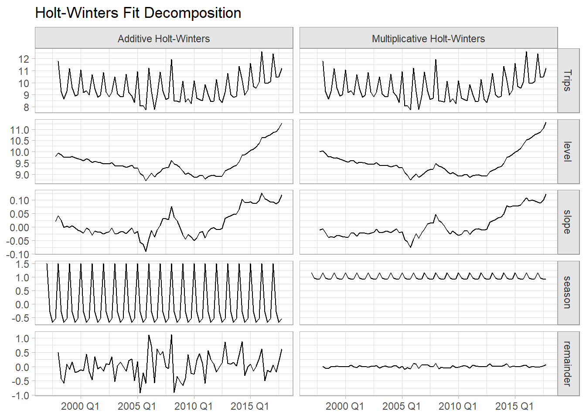
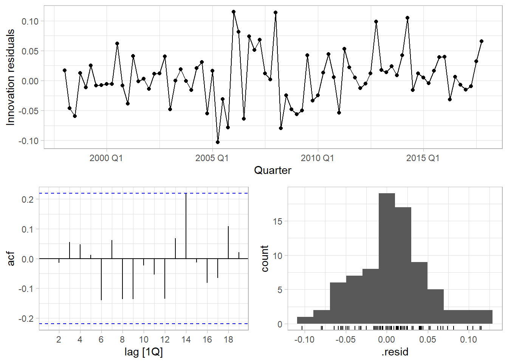

Chapter 4 Exponential Smoothing (ETS)
Exponential smoothing methods are weighted averages of past observations, with the weights decaying exponentially as the observations get more remote. Exponential smoothing is a family of methods that vary by their trend and seasonal components.
Seasonal Component | |||
|---|---|---|---|
Trend Component | None (N) | Additive (A) | Multiplicative (M) |
None (N) | (N, N) | (N, A) | (N, M) |
Additive (A) | (A, N) | (A, A) | (A, M) |
Additive Damped (Ad) | (Ad, N) | (Ad, A) | (Ad, M) |
There can be no trend (N), an additive (A) linear trend from the forecast horizon, or a damped additive (Ad) trend leveling off from the forecast horizon.4
There can be no seasonality (N), or it can be additive (A) or multiplicative (M).
The trend and seasonal combinations produce 3 x 3 = 9 possible exponential smoothing methods. ETS (Error, Trend, and Seasonality) models double the number of possible state space models to 18 by treating the error variances as either additive (A) or multiplicative (M). ETS models do not just extend the exponential smoothing models; they also estimate their parameters differently, using maximum likelihood estimation. For models with additive errors, this is equivalent to minimizing the sum of squared errors (SSE). The great advantage of using ETS models is that you can optimize the parameter settings by minimizing the Akaike Information Criterion (AICc).
fable::ETS() fits ETS models:
4.1 Simple Exponential Smoothing (SES)
Simple exponential smoothing models (SES) have no seasonal or trend components. They are of the form \(\hat{y}_{T+h|T} = \alpha(1-\alpha)^0 y_{T-0} + \alpha(1-\alpha)^1y_{T-1} + \alpha(1-\alpha)^2y_{T-2} \dots\) where \(0 < \alpha < 1\) is a weighting parameter. On the one extreme, \(\alpha\) = 1 is the same as a naive model. On the other extreme \(\alpha \approx\) 0 is the average model.
ETS models are commonly expressed in component form as a recursive model. The component form of SES is
\[ \begin{align} \hat{y}_{t+h|t} &= l_t \\ l_t &= \alpha y_t + (1 - \alpha)l_{t-1} \end{align} \]
The first component, \(\hat{y}_{t+h|t}\), is the forecast. It equals the last value of the estimated level. The second component, \(l_t\), is the level (or smoothed value) of the series at time \(t\). It describes how the level changes over time, kind of like a slope. ETS uses nonlinear optimization to estimate two parameters for SES, \(\alpha\) and \(l_0\).
Example
Data set tsibbledata::global_economy contains annual country-level economic indicators, including Exports. This time series has no trend or seasonality, so it is a good candidate for SES.
tsibbledata::global_economy %>%
filter(Country == "Algeria") %>%
ggplot(aes(x = Year, y = Exports)) +
geom_line() +
labs(title = "Algerian Exports (% of GDP)")
fable::ETS() is the exponential smoothing function. With additive errors, this is an ETS(A, N, N) model.
ses_fit <- tsibbledata::global_economy %>%
filter(Country == "Algeria") %>%
model(ETS(Exports ~ error("A") + trend("N") + season("N")))
ses_fit %>% report()## Series: Exports
## Model: ETS(A,N,N)
## Smoothing parameters:
## alpha = 0.8399875
##
## Initial states:
## l[0]
## 39.539
##
## sigma^2: 35.6301
##
## AIC AICc BIC
## 446.7154 447.1599 452.8968Exports were \(\hat{l}_0\) = 39.5% of GDP at period 0 (1960). \(\hat{\alpha}\) = 0.840, a high weight on recent values. Check the model assumptions with residuals plots.

Residual heteroscedasticity compromises prediction intervals. The innovation residuals vs time plot shows no heteroscedasticity.5 It does show a potential outlier around 1962 which might be a concern. Autocorrelation increases prediction intervals. The autocorrelation function plot shows a barely significant negative spike at lag 12 years. Non-normal residuals also compromise prediction intervals. The residual distribution in the histogram is slightly left-skewed.
Use the fitted model to forecast the response variable for five periods. hilo() attaches a prediction interval to the tsibble.
ses_fc <- ses_fit %>%
forecast(h = 5) %>%
hilo(80) %>%
mutate(
lpi = map_dbl(`80%`, ~.$lower),
upi = map_dbl(`80%`, ~.$upper)
)
ses_fit %>%
augment() %>%
ggplot(aes(x = Year)) +
geom_line(aes(y = Exports)) +
geom_line(aes(y = .fitted), color = "goldenrod") +
geom_line(data = ses_fc, aes(y = .mean), color = "goldenrod") +
geom_ribbon(data = ses_fc, aes(ymin = lpi, ymax = upi), alpha = 0.2, fill = "goldenrod") +
labs(title = "Simple Exponential Smoothing, ETS(A, N, N)")
4.2 Holt Linear
Holt’s linear method extends SES with a trend component, \(b_t\).
\[ \begin{align} \hat{y}_{t+h|t} &= l_t + hb_t \\ l_t &= \alpha y_t + (1 - \alpha)(l_{t-1} + hb_{t-1}) \\ b_t &= \beta^*(l_t - l_{t-1}) + (1 - \beta^*)b_{t-1} \end{align} \]
The level equation, \(l_t\), is like SES except for a trend adjustment. The trend equation, \(b_t\), describes how the slope changes over time. The parameter \(\beta^*\) describes how quickly the slope can change. Now there are four parameter to estimate, \(\alpha\), \(l_0\), \(\beta^*\), and \(b_0\).
Example
Data set tsibbledata::global_economy contains annual country-level economic indicators, including Population size. This time series has a trend, so it is a good candidate for Holt’s linear trend method.
tsibbledata::global_economy %>%
filter(Country == "Australia") %>%
ggplot(aes(x = Year, y = Population)) +
geom_line() +
labs(title = "Australian Population.")Fit the model with ETS() specifying an additive trend, ETS(A, A, N).
holt_fit <- tsibbledata::global_economy %>%
filter(Country == "Australia") %>%
model(ETS(Population ~ error("A") + trend("A") + season("N")))
holt_fit %>% report()## Series: Population
## Model: ETS(A,A,N)
## Smoothing parameters:
## alpha = 0.9998992
## beta = 0.3257153
##
## Initial states:
## l[0] b[0]
## 10067191 228012.5
##
## sigma^2: 4139605871
##
## AIC AICc BIC
## 1525.705 1526.859 1536.008\(\hat{l}_0\) = 10,067,191 people at period 0 (1960). \(\alpha\) is high when the trend increases rapidly, assigning more weight to recent values. \(\hat{\alpha}\) = 0.9999, a very high weighting. Population initially grows at \(\beta_0\) = 228,013 people per year. \(\hat{\beta}\) = 0.326, a fairly large value, meaning the trend changes often.
Check the model assumptions with residuals plots. There is no heteroscedasticity in the residuals vs time plot and no skew in the residual distribution plot, so the prediction intervals are reliable. The autocorrelation plot has no significant spikes, so the prediction intervals will not be unduly large.

Use the fitted model to forecast the response variable for ten periods.
holt_fc <- holt_fit %>%
forecast(h = 10) %>%
hilo(80) %>%
mutate(
lpi = map_dbl(`80%`, ~.$lower),
upi = map_dbl(`80%`, ~.$upper)
)
holt_fit %>%
augment() %>%
ggplot(aes(x = Year)) +
geom_line(aes(y = Population)) +
geom_line(aes(y = .fitted), color = "goldenrod") +
geom_line(data = holt_fc, aes(y = .mean), color = "goldenrod") +
geom_ribbon(data = holt_fc, aes(ymin = lpi, ymax = upi), alpha = 0.2, fill = "goldenrod") +
labs(title = "Holt's Linear Method, ETS(A, A, N)")
4.3 Additive Damped Trend
Holt’s linear trend produces a sloped, but straight, line. Research shows that constant trends tend to overshoot. The additive damped trend model introduces a damping parameter, \(\phi\), to reduce the forecasted trend to a flat line over time. The forecast equation replaces \(h\) with the series \(\phi^1 + \phi^2 + \cdots + \phi^h\). The trend equation adds \(\phi\) as a multiplier to the second term.
\[ \begin{align} \hat{y}_{t+h|t} &= l_t + (\phi^1 + \phi^2 + \cdots + \phi^h)b_t \\ l_t &= \alpha y_t + (1 - \alpha)(l_{t-1} + \phi b_{t-1}) \\ b_t &= \beta^*(l_t - l_{t-1}) + (1 - \beta^*) \phi b_{t-1} \end{align} \]
Now there are five parameters to estimate, \(\alpha\), \(\beta^*\), \(l_0\), \(b_0\), and \(\phi\) (although you can supply a \(\phi\) value to the trend() equation. Expect \(\phi\) to between .8 and .998.
Example
Return to the Australian population data and include an additive damped trend model in a fit. The new model is an ETS(A, Ad, N).
dholt_fit <- tsibbledata::global_economy %>%
filter(Country == "Australia") %>%
model(
`Holt's Linear` = ETS(Population ~ error("A") + trend("A") + season("N")),
`Damped Holt's Linear` = ETS(Population ~ error("A") + trend("Ad") + season("N"))
)
# Just report on the new model.
dholt_fit %>% select(`Damped Holt's Linear`) %>% report()## Series: Population
## Model: ETS(A,Ad,N)
## Smoothing parameters:
## alpha = 0.9998988
## beta = 0.4392868
## phi = 0.98
##
## Initial states:
## l[0] b[0]
## 10067191 277729.2
##
## sigma^2: 4584582964
##
## AIC AICc BIC
## 1532.543 1534.190 1544.906\(\hat{\phi}\) = 0.980, a modest amount of damping. \(\hat{\beta}\) increased from 0.326 in the linear model to 0.439 here, so the slope is changing more frequently.
dholt_fc <- dholt_fit %>%
forecast(h = 10) %>%
hilo(80) %>%
mutate(
lpi = map_dbl(`80%`, ~.$lower),
upi = map_dbl(`80%`, ~.$upper)
)
palette_dholt <- c(`Holt's Linear` = "goldenrod", `Damped Holt's Linear` = "seagreen")
dholt_fit %>%
augment() %>%
ggplot(aes(x = Year)) +
geom_line(aes(y = Population)) +
geom_line(aes(y = .fitted, color = .model)) +
geom_line(data = dholt_fc, aes(y = .mean, color = .model)) +
geom_ribbon(data = dholt_fc, aes(ymin = lpi, ymax = upi, color = .model, fill = .model),
alpha = 0.2) +
scale_fill_manual(values = palette_dholt) +
scale_color_manual(values = palette_dholt) +
theme(legend.position = "top") +
labs(color = NULL, fill = NULL,
title = "Holt's Linear Method, ETS(A, A, N), and Additive Damped, ETS(A, Ad, N)")
4.4 Holt-Winters
The Holt-Winters method extends Holt’s method with a seasonality component, \(s_t\), for \(m\) seasons per period. There are two versions of this model, the additive and the multiplicative. The additive method assumes the error variance is constant, and the seasonal component sums to approximately zero over the course of the year. The multiplicative version assumes the error variance scales with the level, and the seasonal component sums to approximately \(m\) over the course of the year.
Additive Holt-Winters introduces the seasonality component as an additive element.
\[ \begin{align} \hat{y}_{t+h|t} &= l_t + hb_t + s_{t+h-m(k+1)} \\ l_t &= \alpha(y_t - s_{t-m}) + (1 - \alpha)(l_{t-1} + b_{t-1}) \\ b_t &= \beta^*(l_t - l_{t-1}) + (1 - \beta^*)b_{t-1} \\ s_t &= \gamma(y_t - l_{t-1} - b_{t-1}) + (1 - \gamma)s_{t-m} \end{align} \]
\(k\) is the modulus of \((h - 1) / m\), so \(s_{t+h-m(k+1)}\) is always based on the prior seasonal period. \(l_t\) is a weighted average (\(\alpha\) weighting) between the seasonally adjusted observation and the non-seasonal forecast. The trend component is unchanged. The seasonal component is a weighted average (\(\gamma\) weighting) between the current seasonal index and the same season of the prior season period.
The seasonality averages to one in multiplicative Holt-Winters. Use the multiplicative method if the seasonal variation increases with the level.
\[ \begin{align} \hat{y}_{t+h|t} &= (l_t + hb_t) s_{t+h-m(k+1)} \\ l_t &= \alpha\frac{y_t}{s_{t-m}} + (1 - \alpha)(l_{t-1} + b_{t-1}) \\ b_t &= \beta^*(l_t - l_{t-1}) + (1-\beta*)b_{t-1} \\ s_t &= \gamma\frac{y_t}{(l_{t-1} - b_{t-1})} + (1 - \gamma)s_{t-m} \\ \end{align} \]
Now there are five smoothing parameters to estimate: \(\alpha\), \(l_0\), \(\beta^*\), \(b_0\), and \(\gamma\), plus an initial value for each season of the seasonal period.
Example
Data set tsibble::tourism contains quarterly domestic tourist visit-nights in Australia. It’s not clear whether the error variance increases with the series level, so either the additive or the multiplicative method may be appropriate.
tsibble::tourism %>%
filter(Purpose == "Holiday") %>%
summarize(Trips = sum(Trips) / 1000) %>%
ggplot(aes(x = Quarter, y = Trips)) +
geom_line() +
labs(title = "Australian Domestic Tourist Visit-Nights")
Fit the model with ETS() specifying additive and multiplicative seasonality and error, ETS(A, A, A) and ETS(M, A, M).
hw_fit <- tsibble::tourism %>%
filter(Purpose == "Holiday") %>%
summarize(Trips = sum(Trips) / 1000) %>%
model(
`Additive Holt-Winters` = ETS(Trips ~ error("A") + trend("A") + season("A")),
`Multiplicative Holt-Winters` = ETS(Trips ~ error("M") + trend("A") + season("M"))
)
hw_fit %>% tidy() %>% pivot_wider(names_from = .model, values_from = estimate)## # A tibble: 9 × 3
## term `Additive Holt-Winters` `Multiplicative Holt-Winters`
## <chr> <dbl> <dbl>
## 1 alpha 0.262 0.224
## 2 beta 0.0431 0.0304
## 3 gamma 0.000100 0.000100
## 4 l[0] 9.79 10.0
## 5 b[0] 0.0211 -0.0114
## 6 s[0] -0.534 0.943
## 7 s[-1] -0.670 0.927
## 8 s[-2] -0.294 0.969
## 9 s[-3] 1.50 1.16Notice that the seasonal component estimates, s[0] to s[-3], sum to ~0 for the additive model and ~4 for the multiplicative model, the number of seasons in the seasonal period. The small \(\hat{\gamma}\) values mean the seasonal component hardly changes over time. The small \(\hat{\beta}\) values mean the slope component hardly changes over time. You can see this more clearly in the fit decomposition (note the differing vertical scales for the slope and level components).
hw_fit %>%
components() %>%
pivot_longer(cols = Trips:remainder) %>%
mutate(name = factor(name, levels = c("Trips", "level", "slope", "season", "remainder"))) %>%
ggplot(aes(x = Quarter, y = value)) +
geom_line() +
facet_grid(rows = vars(name), cols = vars(.model), scales = "free_y") +
labs(x = NULL, y = NULL, title = "Holt-Winters Fit Decomposition")
The model fit metrics suggest Multiplicative Holt-Winters is the better model. It has lower AIC and MSE.
## # A tibble: 2 × 9
## .model sigma2 log_lik AIC AICc BIC MSE AMSE MAE
## <chr> <dbl> <dbl> <dbl> <dbl> <dbl> <dbl> <dbl> <dbl>
## 1 Additive Holt-Winters 0.193 -105. 229. 231. 250. 0.174 0.184 0.321
## 2 Multiplicative Holt-Wint… 0.00212 -104. 227. 229. 248. 0.170 0.183 0.0328Check the model assumptions of the multiplicative model. The residuals plot shows some heteroscedasticity in the middle periods, and higher variance the latter years. The histogram shows a normal distribution. The autocorrelation function (ACF) plot shows a single significant spike at t14. The Ljung-Box test fails to reject the null hypothesis of no autocorrelation of the residuals (p = 0.504).
# Can't use an object containing multiple fits, so re-fit just the multiplicative model.
hwm_fit <- tsibble::tourism %>%
filter(Purpose == "Holiday") %>%
summarize(Trips = sum(Trips) / 1000) %>%
model(ETS(Trips ~ error("M") + trend("A") + season("M")))
hwm_fit %>%
gg_tsresiduals()
## # A tibble: 1 × 3
## .model lb_stat lb_pvalue
## <chr> <dbl> <dbl>
## 1 "ETS(Trips ~ error(\"M\") + trend(\"A\") + season(\"M\"))" 13.3 0.504Use the fitted model to forecast the response variable for ten periods.
hw_fc <- hw_fit %>%
forecast(h = 10) %>%
hilo(80) %>%
mutate(
lpi = map_dbl(`80%`, ~.$lower),
upi = map_dbl(`80%`, ~.$upper)
)
palette_hw <- c(`Additive Holt-Winters` = "goldenrod",
`Multiplicative Holt-Winters` = "seagreen")
hw_fit %>%
augment() %>%
ggplot(aes(x = Quarter)) +
geom_line(aes(y = Trips)) +
geom_line(aes(y = .fitted, color = .model)) +
geom_line(data = hw_fc, aes(y = .mean, color = .model)) +
geom_ribbon(data = hw_fc, aes(ymin = lpi, ymax = upi, color = .model, fill = .model),
alpha = 0.2) +
scale_fill_manual(values = palette_hw) +
scale_color_manual(values = palette_hw) +
theme(legend.position = "top") +
labs(color = NULL, fill = NULL,
title = "Holt Winters Additive, ETS(A, A, A), and Multiplicative, ETS(M, A, M)")4.5 Auto-fitting
If you specify an ETS model with no parameters, it will use maximum likelihood to select the model with the minimum AICc.
auto_fit <- tsibble::tourism %>%
filter(Purpose == "Holiday") %>%
summarize(Trips = sum(Trips) / 1000) %>%
model(ETS(Trips))
auto_fit %>% report()## Series: Trips
## Model: ETS(M,N,A)
## Smoothing parameters:
## alpha = 0.3484054
## gamma = 0.0001000018
##
## Initial states:
## l[0] s[0] s[-1] s[-2] s[-3]
## 9.727072 -0.5376106 -0.6884343 -0.2933663 1.519411
##
## sigma^2: 0.0022
##
## AIC AICc BIC
## 226.2289 227.7845 242.9031ETS chose a multiplicative error, non-trended, additive error model. Compare this model fit with the two Holt-Winters fits from the previous section. The autofit had the largest MSE, but lowest AICc.
## # A tibble: 3 × 9
## .model sigma2 log_lik AIC AICc BIC MSE AMSE MAE
## <chr> <dbl> <dbl> <dbl> <dbl> <dbl> <dbl> <dbl> <dbl>
## 1 Additive Holt-Winters 0.193 -105. 229. 231. 250. 0.174 0.184 0.321
## 2 Multiplicative Holt-Wint… 0.00212 -104. 227. 229. 248. 0.170 0.183 0.0328
## 3 ETS(Trips) 0.00215 -106. 226. 228. 243. 0.183 0.197 0.0347